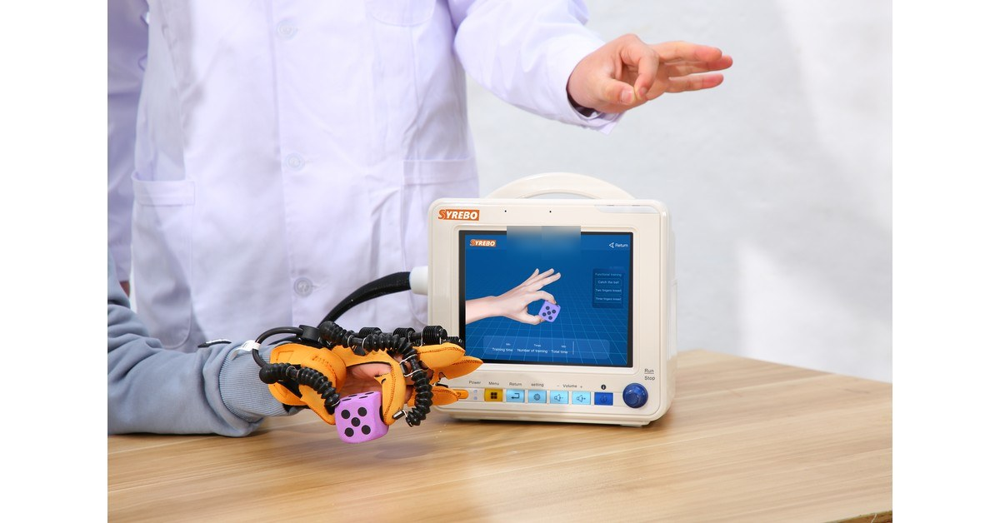

羿生临床研究专栏
循证 · 康复机器人手套临床研究解读
文献摘录
The Impact of Three-Week Passive Robotic Hand Therapy on Stroke Patients
Xinhang Li, Minjun Zheng, Jinbiao Liu, Li Zhang, Lizi Jiang, Shiwei Zheng, Linqing Feng, Tao Tang, Lei Ling, Xiangming Ye, Yina Wei
Intelligent Robotics and Applications, ICIRA 2023, LNCS 14267
DOI: 10.1007/978-981-99-6483-3_21
文献摘录区未展示论文图片。

这篇会议论文更适合当成“训练加上神经生理记录”，而不是一项已经证明手功能疗效的对照试验。摘要写到手功能的改善有限，同时又写到整体脑活动有变化。摘要报告三周训练后 β 和 γ 频段的脑电—肌电相干性增加；与主动运动模式的具体关系仍需全文澄清。功能分数和生理信号要分成两句来说。
手功能量表回答的是动作和分数。脑电和肌电回答的是记录当时的电活动，以及脑与肌肉之间有没有更同步。两套结果可以来自同一次训练，却不能互相替代。
会议摘要通常短于期刊全文。样本量、有没有对照、退出了多少人，摘要里没有写清的，不能靠产品手册补上。
手功能康复首先关注能不能完成抓握、松开和简单的日常动作。脑电和肌电回答的是记录当时脑与肌肉是否更同步。早期训练如果只报告一次生理曲线，治疗师无法知道手的分数有没有一起变化。这篇会议摘要把有限的手功能变化和相干性信号放在一起，正好要求这两句话分开写。
研究用脑电图和肌电图观察三周被动机器人手治疗，并用源定位看感觉运动区。出版社摘要没有指出设备制造商或型号，仍需全文核验。
摘要在描述训练后脑活动时讨论了三种运动模式，但没有说明参与人数、设备型号或参与者如何分配。这些细节需要核对全文。
结局也要分成两层。功能层是手功能变化，摘要的用语是改善有限。生理层是整体脑活动，以及训练后 β 与 γ 频段的脑电—肌电相干性；与主动运动模式的具体关系仍需全文澄清。摘要没有给出可以改写成随机对照的分组人数。
研究设计
摘要描述了三周被动机器人手治疗和脑电、肌电记录，并讨论三种运动模式下的脑活动。摘要没有提供足以描述独立训练组或称为随机对照试验的分配细节。
样本与周期
治疗周期是 3 周。完整全文尚未取得，样本量、各组人数和退出情况不在本页补写。
核心结果
摘要报告手功能改善有限，不应改写成显著的功能恢复。摘要同时报告整体脑活动有改善，但三种模式之间，感觉运动区的变化没有显著差异。摘要报告三周训练后 β 与 γ 频段的脑电—肌电相干性增加；与主动运动模式的具体关系仍需全文澄清。作者把这解释为神经驱动肌肉的效率信号。它仍是生理指标，不是日常生活能力的随访结果。
这篇摘要把训练模式和脑活动、神经肌肉耦合放在一起，提醒读机器人手训练时不要只看一次量表。机制信号要单独成句，并且标明全文还没有核对效应值。
对临床阅读，这篇摘要的用处是提醒：训练模式可以同时留下量表和生理记录，但生理记录不能代替手功能或生活活动。在全文核对样本量、对照和效应值之前，它只适合作为机制线索，不适合写进产品说明。
研究边界 证据范围停在出版社摘要和书目，全文尚未取得。设备制造商、型号、样本量、对照设置和精确统计量均未核实，所以不写。手功能改善有限，不能改写成疗效已经确立。相干性不等于自理能力。未在摘要中出现的人数和 p 值不补写。